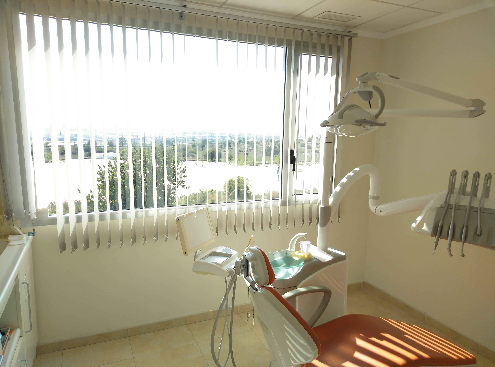
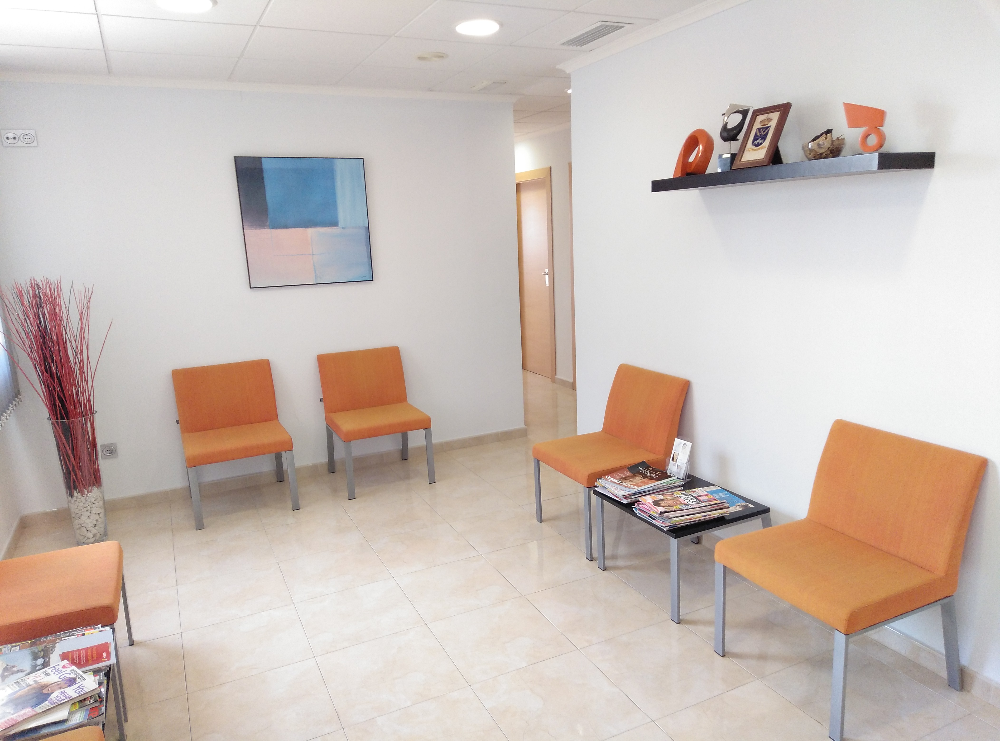
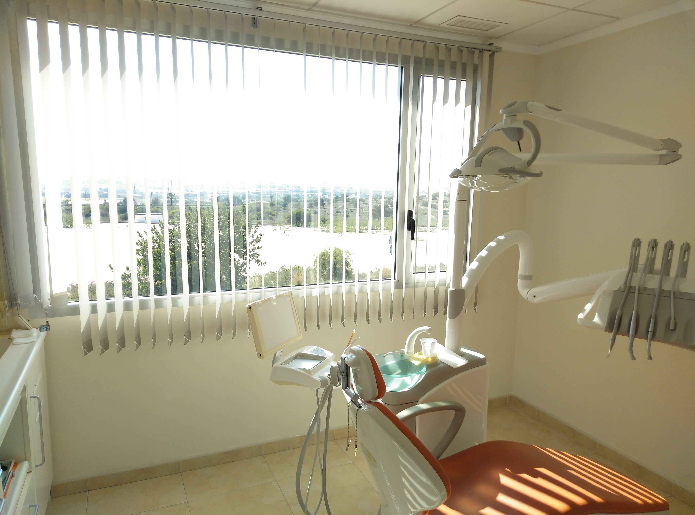
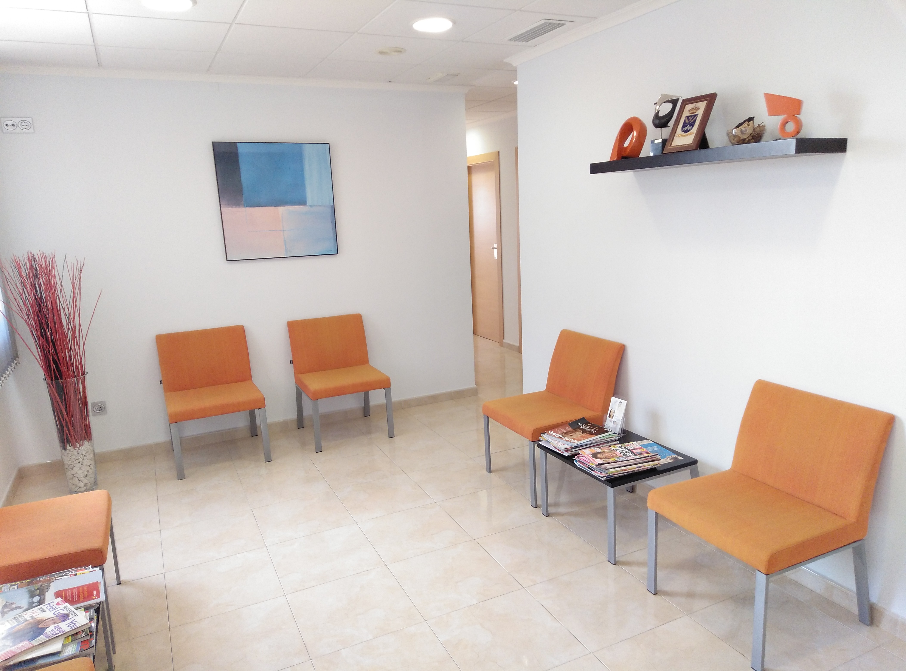

Ubicación
Al llegar a Quesada gire a la izquierda delante de los arcos, continué por la Calle Los Arcos durante aproximadamente medio kilómetro y estamos a mano izquierda, en el mismo edificio que 'Yorkshire Linen'.
 


